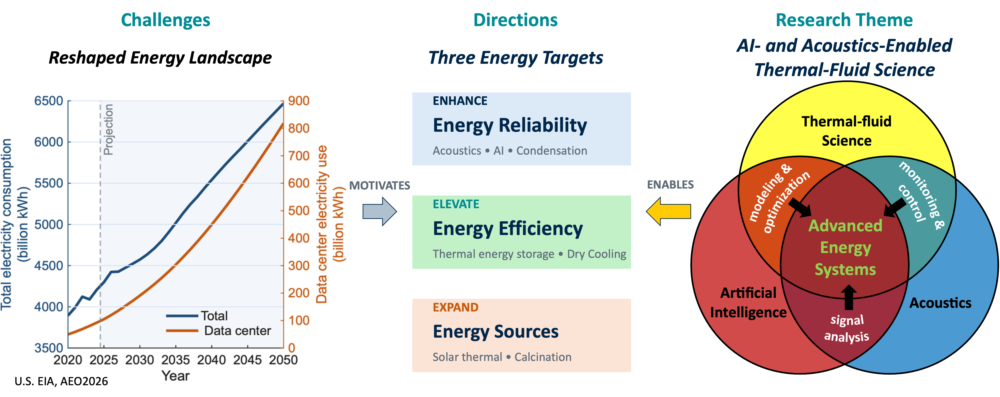

Thermal-fluid science for a better energy future
Hello! My name is Lida Yan. I am currently a Postdoctoral Research Fellow in Mechanical Engineering at the University of Michigan, working with Prof. Rohini Bala Chandran. Prior to joining the University of Michigan, I worked as a postdoctoral researcher with Prof. Ying Sun at the University of Cincinnati. I received my Ph.D. in Mechanical Engineering from Lehigh University in 2024, under the supervision of Prof. Carlos Romero and Prof. Ganesh Balasubramanian.
My research centers on thermal-fluid sciences in energy system, with particular interests in:
- Phase change materials, heat transfer, and acoustic emission
- High-temperature multiphase reactive flow
- Thermal energy storage
- Power plant emissions control
- Additive Manufacturing
